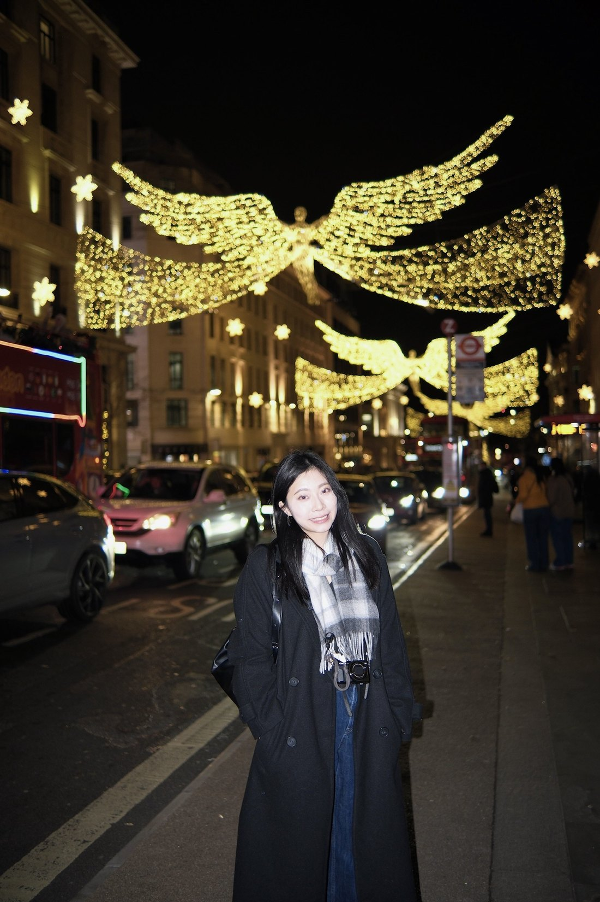
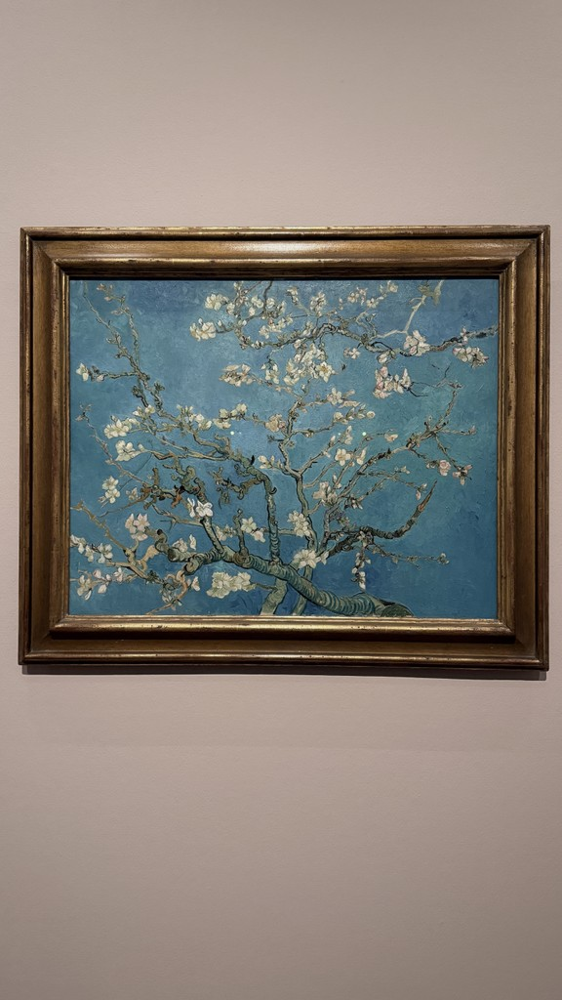
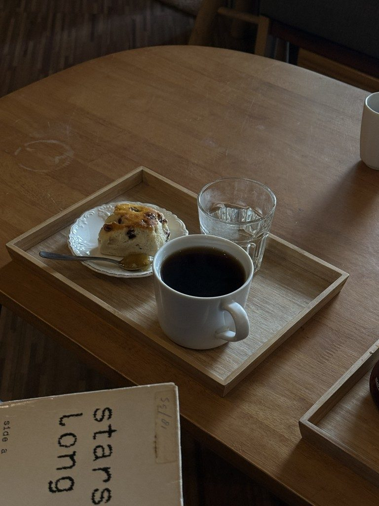
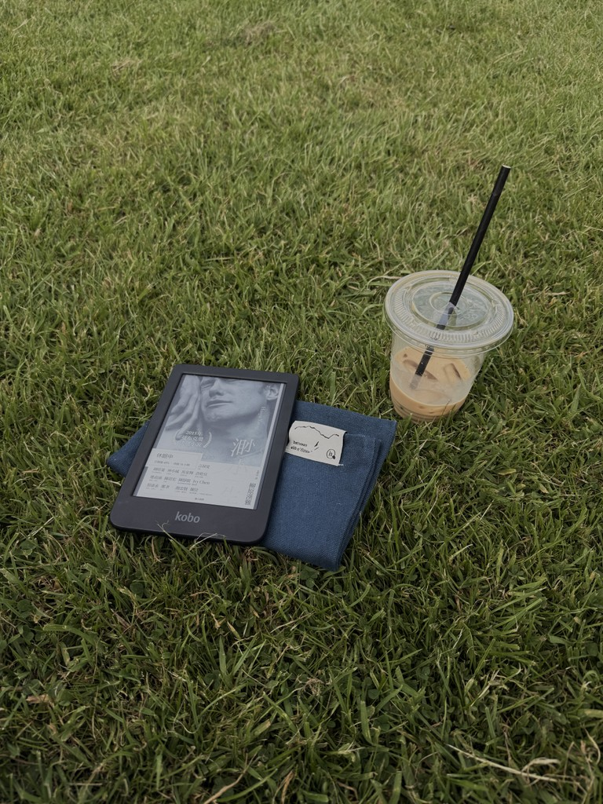

Hi, I'm Ellie :)
Hello!
I’m a product designer with 3+ years of experience in project management, marketing and UX design. I’m driven by curiosity about people: what they need, what holds them back, and how design can make things easier for them.
My project management background helps me align stakeholders, set priorities and keep business goals in view.
I recently finished my MSc in UX Design at Loughborough University with Distinction, where I researched AI in healthcare. My strengths are user research, data analysis and product thinking.
Experience
Education
Awards
Skills
User interviews, Usability testing, Heuristic evaluation, Behavioral research, SPSS, NVivo, Data analysis
Outside of work, I love…

traveling refills my energy

playing with my cats <3

visiting exhibitions

cafe hopping ☕️

reading makes me feel calm
Click the photos to flip through